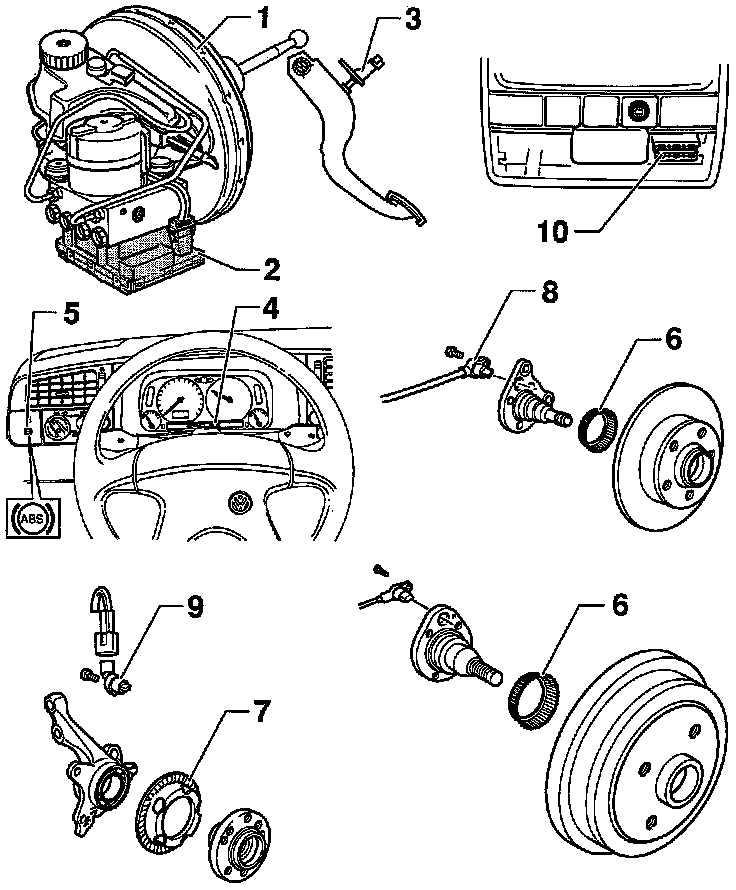

Antilock Brakes / Traction Control Systems: Locations
Teves 20 GI ABS and ABS/EDL Electrical/Electronic Component Locations
ABS/EDL Component Locations:

1. ABS hydraulic unit -N55-
^ Located on left side of engine compartment
^ The hydraulic unit consists of the components:
- ABS hydraulic pump -V64-
- Valve block with inlet and outlet valves
- Multi-pin connector
2. ABS control module
^ Located on ABS hydraulic unit in left side of engine compartment
3. The brake light switch
^ Located on pedal support under left dash
4. Warning Light for brake system -K118-
^ Location: in instrument cluster
5. ABS warning light -K47-
^ Location: left next to instrument cluster
6. Impulse rotor
^ For right and left rear speed sensors
7. Impulse rotor
^ For right and left front speed sensors
8. ABS wheel speed sensor
^ For right and left rear
9. ABS wheel speed sensor
^ For right and left front
10. Data Link Connector (DLC)
^ Location: behind a cover on the right next to the ashtray